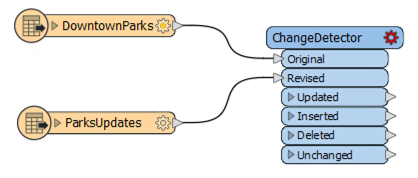
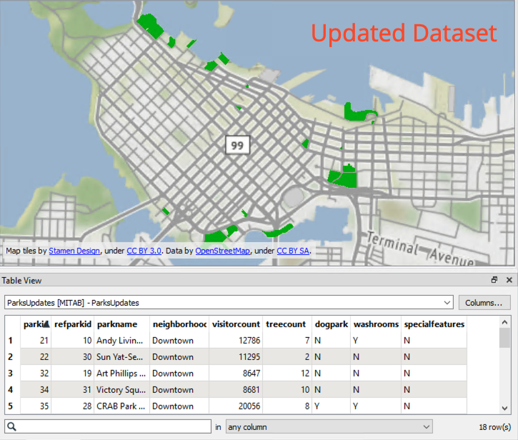

After completing this unit, you’ll be able to:
A common scenario that one may encounter when working with a geodatabase is to receive a set of data that contains changes to the features and attributes of feature classes in an existing geodatabase. The following example will show how to use geodatabase functionality in order to update existing geodatabase features with an edited Mapinfo TAB dataset.
The Esri Geodatabase (File Geodb) reader/writer used in the following example requires that a licensed version of ArcGIS be available to the user. For more information on required ArcGIS license levels, please see Required ArcGIS License Types for FME Geodatabase Formats .
1. Read Source Data
Open FME Workbench and start a blank workspace. Add an Esri Geodatabase (File Geodb) reader to the canvas and browse to the GeodatabaseUpdates_Source.gdb dataset from the Resources download. Then click OK to add the reader. Since there is only one feature type (feature class) in this dataset, it will automatically be selected.
Updates to be applied to this dataset will be read from our ParkUpdates.tab Mapinfo TAB file. Add a MapInfo TAB (MITAB) reader to the canvas and browse to the ParksUpdates.tab dataset from the Resources download. Click OK to add the reader.
2. Perform Change Detection
Seeing as we have two datasets read in, our original data and our updated data, we can perform change detection to see what has changed between the two datasets. Add a ChangeDetector to the canvas. Connect the original DowntownParks reader feature type to the Original input port on the ChangeDetector, and then connect the ParksUpdates to the Revised input port.

In the ChangeDetector parameters, set the Update Detection Key to parkid, this will ensure each feature that is similar is only compared with itself. Next, click on the ellipsis next to Select Attributes and select the following:
Then uncheck Check Geometry and click OK.
4. Update Original Feature Class
Add an Esri Geodatabase (File Geodb) writer to the workspace, browse to a location to save the dataset. Set the Feature Class or Table Definition to Copy from Reader and then open the Parameters.
In the Parameters, since we are using our original source geodatabase as a template, enable Overwrite Existing Geodatabase and for Template File Geodatabase select GeodatabaseUpdates_Source.gdb. When using a Geodatabase as a template, both the schema and data that are currently within the Geodatabase will be copied. Now this will overwrite the existing Geodatabase if it exists, however, this does not overwrite the template. Click OK twice to add the writer.

In the Select Feature Type dialog appears, select DowntownParks. This will copy the schema from this reader feature type and apply it to our writer Feature type that we are going to write to.
Once the writer has been added to the canvas, connect the Updated, Inserted, and Deleted Output ports from the ChangeDetector to the DowntownParks writer feature type.

Now there is one more step before we can write out the changed data, we need to modify the writer feature type parameters to update the geodatabase. Open the writer feature type parameters, change the Feature Operation to fme_db_operation, then change the Update Spatial Columns to No. Next click on the ellipsis next to Match Columns and select parkid, then click OK.

5. Save and Run the Workspace
Now, save the workspace and then run it. View your output in FME Visual Preview or in Esri ArcCatalog to confirm that the changes have been applied.
14 records will be updated, and one will be deleted.

